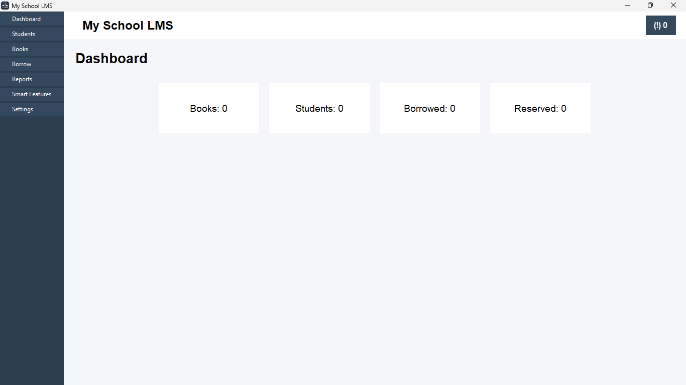
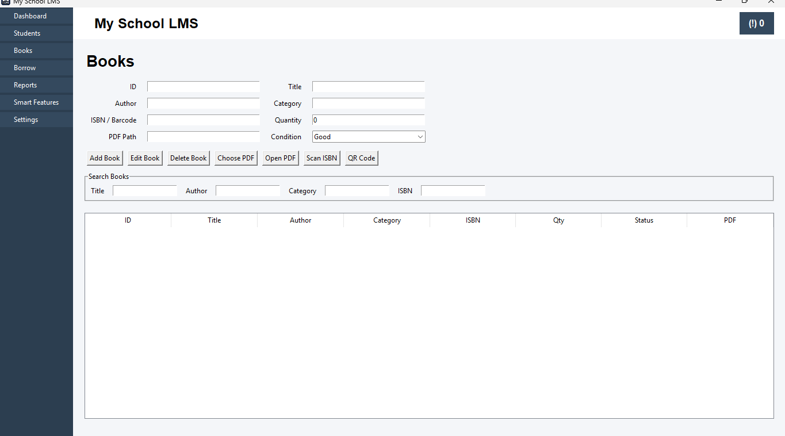
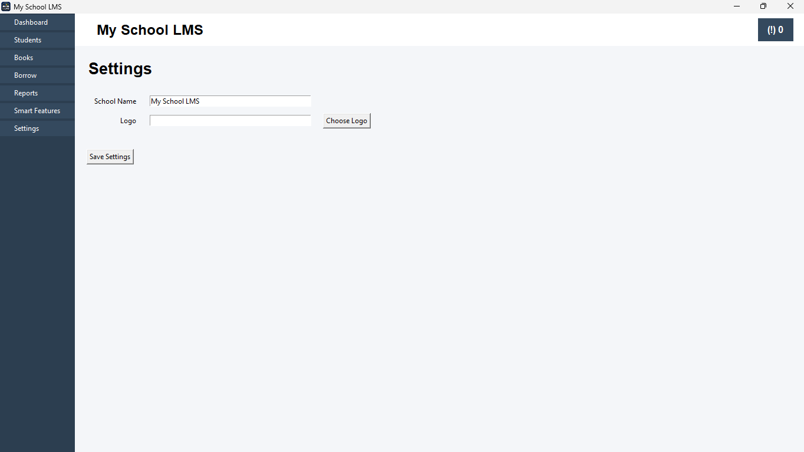

A lightweight desktop application developed by Nexa Code Lab to help schools manage books, borrowing records, and library operations.
⬇ Download Windows (.exe) ▶ Watch DemoSmartLib is a Python-based desktop application that replaces manual library record keeping with an easy-to-use digital system. It allows librarians to organize books, manage borrowers, and keep accurate records efficiently.
Add, edit and organize books easily.
Quickly search books by title or author.
Track borrowed and returned books.
Uses SQLite for reliable offline storage.
Distributed as a standalone Windows executable.



SmartLib helps schools digitize their libraries, reduce paperwork, improve record keeping, and make book management faster and easier.